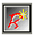
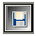
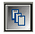
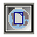
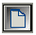
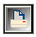

Панель проекта
Панель проекта
панель проекта предоставляет базовую функциональность для проекта. Это дает быстрый доступ для выполнения общих задач при управлении проекта. Все функции панели доступны и через меню Rave.
Первые три иконки управления проектами:
 New Project Создает новый проект
Open Project Открывает предыдущий сохраненный проект
 Save Project Сохраняет текущий проект
Следующие три иконки управляют специфическими аспектами текущего проекта:
 New Report Создает новый отчет, который будет в том же самом файле проекта (.rav file). Может иметь более одного отчета на проект в файле проекта
 New Global Page Создает новую глобальную страницу
New Data View Позволяет создать новый просмотр данных DataViews, который ассоциирован с текущим проектом. Смотрите главу «Подключение данных» для получения более подробной информации о DataViews.
Две последние иконки управляют текущим выбранным отчетом:
 New Page Создает новую страницу в текущем отчете
 Execute Report Выполняет или печатает текущий отчет